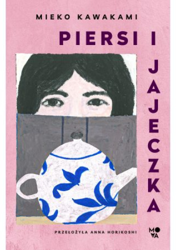
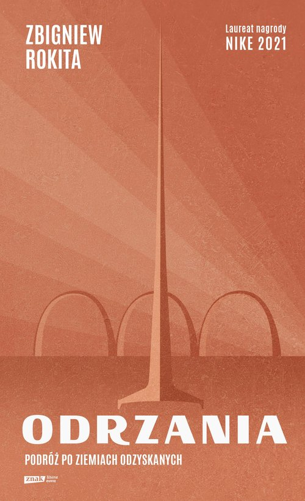
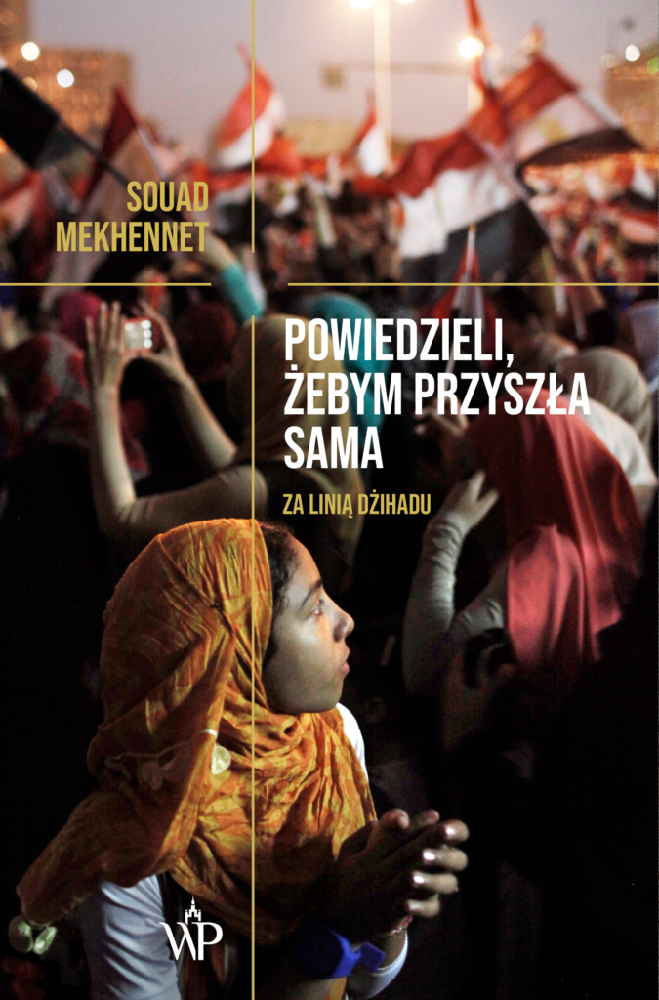

Zaliczenie 2. projektu z AWWW
Moje ulubione książki z 2024 roku
Czyli co czytałam w wolnych chwilach od informatyki...
Top 5 książek
| Odrzania. Podróż po Ziemiach Odzyskanych |
Zbigniew Rokita |
Reportaż |
| Powiedzieli, żebym przyszła sama. Za linią dżihadu |
Souad Mekhennet |
Reportaż |
| Imperium Bólu. Baronowie przemysłu farmaceutycznego |
Patrick Radden Keefe |
Reportaż |
| Piersi i jajeczka |
Mieko Kawakami |
Literatura piękna |
| Mistrz i Małgorzata |
Michaił Bułhakow |
Fantasy |





Jak czytać więcej?
- Nawet 5 minut przed snem może zrobić sporą różnicę w perspektywie rocznej.
- Zabieraj ze sobą książkę wszędzie, gdzie idziesz. Może akurat znajdzie się chwila na kilka stron.
- Nie zmuszaj się do czytania tego, czego nie lubisz. Jeśli literatura rosyjskich dziadów nie sprawia Ci radości, znajdź to, co faktycznie Cię zaciekawi. Może jakiś reportaż?
- Zapisz się do klubu książki. W Warszawie jest ich sporo, sama należę do jednego 🙂.
- Umawiaj się z przyjaciółmi na czytelnicze spotkania, podczas których czytacie w tym samym czasie - motywacja z pewnością wzrasta!
- Więcej rad można przeczytać
pod tym linkiem
Mój sekret dlaczego tyle czytam
Próbuję tym samym nie uczyć się informatyki 🙂.